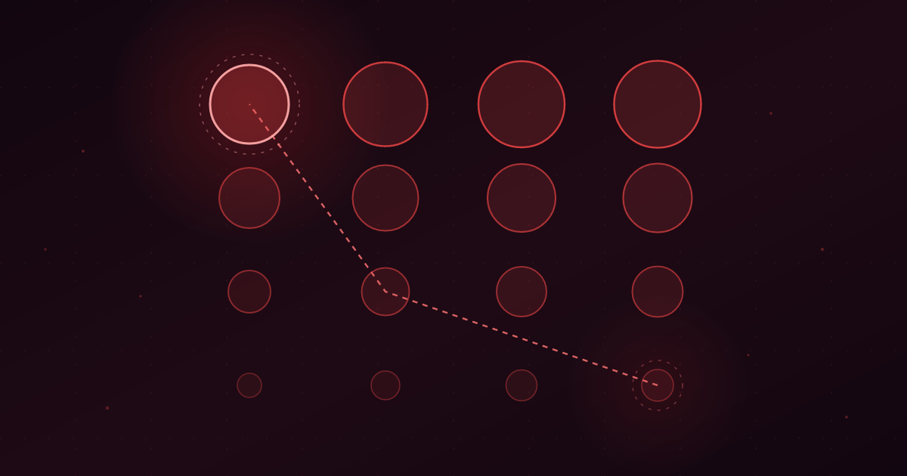

Four Doors, One Room
Same reading budget: four sources read once beat one source read four times.
Ibrahim AbuAlhaol, PhD, P.Eng., SMIEEE
AI Technical Lead
You read the chapter four times. Someone else read four different explanations of the same thing, once each. Same hours, same number of pages. Next week, in a test neither of you knew was coming, they will remember more than you will.
Rereading feels like the safer investment. The text gets smoother on every pass, the sentences stop surprising you, and by the fourth time through you could almost recite the argument. That feeling is real. It is just measuring the wrong thing.
What the second pass actually buys
Rereading is the most popular study technique in the world and one of the weakest. When John Dunlosky and colleagues reviewed ten common learning techniques for the journal Psychological Science in the Public Interest, they rated rereading low utility, alongside highlighting and summarizing. Aimee Callender and Mark McDaniel had already shown why: across several experiments with real textbook chapters, a second reading produced no reliable gain on comprehension measures, and what small benefit appeared was confined to immediate, surface-level recall.
None of that says repetition is worthless. It says the returns arrive fast and then flatten. The fourth pass costs exactly what the first one cost and returns almost nothing, which makes it the most expensive reading you do.
Now hold the cost fixed and spend it differently. Your reading budget is the product of two numbers: how many distinct sources you open, and how many passes you make over each. Four readings of one source, two readings each of two sources, and one reading each of four sources all cost the same. They do not return the same thing.
Four doors to the same room
The mechanism has a name. Encoding variability, proposed by Edwin Martin in 1968, holds that a memory is not stored as a bare fact but as a fact plus the circumstances of meeting it: the words that were used, the example that was given, the order the argument came in, the diagram that sat on the page. Those circumstances become retrieval cues. Meet an idea in four different settings and you store four different cue sets pointing at the same idea.
Read the same page four times and you get one cue set, reinforced. That is a real gain, and it is why the circles in the bottom row of Figure 1 do grow. But it is one path, and paths are only useful if you happen to be standing at the right end of them.
Rereading deepens one route to an idea. Four sources build four. At retrieval you do not get to choose which door you walk in through.
An example. Suppose you want to understand why caching a language model prompt saves money. One source explains it with a billing table. Another draws the transformer's attention computation. A third is an engineer's post-mortem about a bill that dropped by eighty percent overnight. A fourth is the vendor's documentation, formal and precise. Six months later a colleague asks you an unrelated question about latency, and the post-mortem is what surfaces, because it happened to be the version that shared a cue with the question. If you had only read the billing table four times, nothing would have surfaced at all.
Charles Perfetti, Jean-François Rouet and Anne Britt describe a second thing multiple sources give you, which they call the documents model. Reading several accounts builds a representation of the content and, separately, a representation of who said what and how the accounts relate. That second layer is what lets you say "this is contested" or "that author is arguing against this one," and a single source cannot produce it at any number of passes.
The gap takes a week to open
This was tested directly last year. Petr Seban, Kamil Urban and Radovan Sikl ran 186 psychology students through three conditions: read a text once, reread the same text across three sessions, or read three different but conceptually compatible texts across three sessions. Everyone then sat a knowledge test one day later and another one week later.
At one day, the rereading group and the multiple-text group looked about the same, and both beat single reading by a little. At one week they separated. The multiple-text group held its score almost flat between the two tests. The rereading group did not.
That timing matters more than the size of the gap. The horizontal axis wins the test you take tomorrow. The vertical axis wins the test you take next week, which in working life is the only test there is. Nobody asks you about the architecture document the afternoon you read it.
The strategy that feels worse
The same study asked students to predict their own performance, and the predictions went the wrong way. The rereading group grew more confident after every pass and then overestimated what they knew, badly so on the one-day test. The multiple-text group's confidence stayed flat, and they underestimated themselves.
The reason is fluency. A second pass through familiar prose runs smoothly, and the brain reads smoothness as knowledge. A fresh source is bumpy: different vocabulary, different order, an example you have to work to map onto the one you already had. The bumps are the work. They feel like failure and they are the part that is building something.
Where this stops being true
Two honest limits.
First, encoding variability is disputed as the general explanation for why spaced repetition works. When researchers tested Martin's hypothesis on identical repetitions in the 1970s, the results came back negative more often than not, and competing accounts have held up better in imaging work. What is not disputed is the case here, where the encodings genuinely differ because the texts genuinely differ. That is the strong form of the idea, and the retention data supports it even where the mechanism is argued over.
Second, the study used texts chosen to be conceptually compatible. Real multi-source reading is messier. Four sources that contradict each other, or three that are wrong, raise the cost of integration and can leave you with four confident half-explanations instead of one solid one. Breadth helps when the sources are about the same thing and at least one of them is right. Choosing them is the part that takes judgment, and it is the part an executive summary cannot do for you.
Running it
Pick three or four accounts that differ in form, not just in author: a paper, a talk, a worked example, someone's blog post explaining why the paper is wrong. Different forms produce different cues, which is the whole point. Four survey articles covering the same ground in the same register give you far less variety than a paper plus a code walkthrough.
Read each one once, properly. Do not skim four things. The comparison that holds is one careful pass each, not four shallow ones.
Between sources, write a sentence about where the new one disagrees with the last. That sentence is the documents model, externalized, and it takes about twenty seconds. It also forces the integration that makes breadth pay rather than just accumulate.
Expect to finish less confident than the version of you who read one thing four times. The confidence was the part that was not real.
What leaders should do
- Change what your team's learning budget buys. Replace "read this book" with three or four shorter sources covering the same ground from different angles, holding total reading time constant.
- Stop treating one canonical internal document as sufficient onboarding. Pair it with an outside explanation and a recorded walkthrough, then ask the new engineer where the three disagree.
- Move the comprehension check to a week after the session, not the same afternoon. The two strategies look identical on day one and only separate later.
- Treat rising confidence during study as a warning rather than progress. Ask people to predict their week-later score before they see it, and compare.
None of this makes repetition wrong. It makes it a second-order tool. The first decision is how many doors you build into the room, and only after that does it matter how well you know the way through any one of them.
Related Articles
References & Extended Literature
- Seban, P., Urban, K., & Sikl, R. (2025). "Comparing the effectiveness of multiple text reading and rereading on knowledge retention and metacognitive accuracy." Instructional Science, 53(3), 337–364. https://doi.org/10.1007/s11251-024-09686-4
- Callender, A. A., & McDaniel, M. A. (2009). "The limited benefits of rereading educational texts." Contemporary Educational Psychology, 34(1), 30–41. https://doi.org/10.1016/j.cedpsych.2008.07.001
- Dunlosky, J., Rawson, K. A., Marsh, E. J., Nathan, M. J., & Willingham, D. T. (2013). "Improving Students' Learning With Effective Learning Techniques." Psychological Science in the Public Interest, 14(1), 4–58. https://doi.org/10.1177/1529100612453266
- Martin, E. (1968). "Stimulus meaningfulness and paired-associate transfer: An encoding variability hypothesis." Psychological Review, 75(5), 421–441. https://doi.org/10.1037/h0026301
- Perfetti, C. A., Rouet, J.-F., & Britt, M. A. (1999). "Toward a theory of documents representation." In H. van Oostendorp & S. R. Goldman (Eds.), The Construction of Mental Representations During Reading (pp. 99–122). Lawrence Erlbaum Associates. https://www.taylorfrancis.com/chapters/edit/10.4324/9781410603050-5